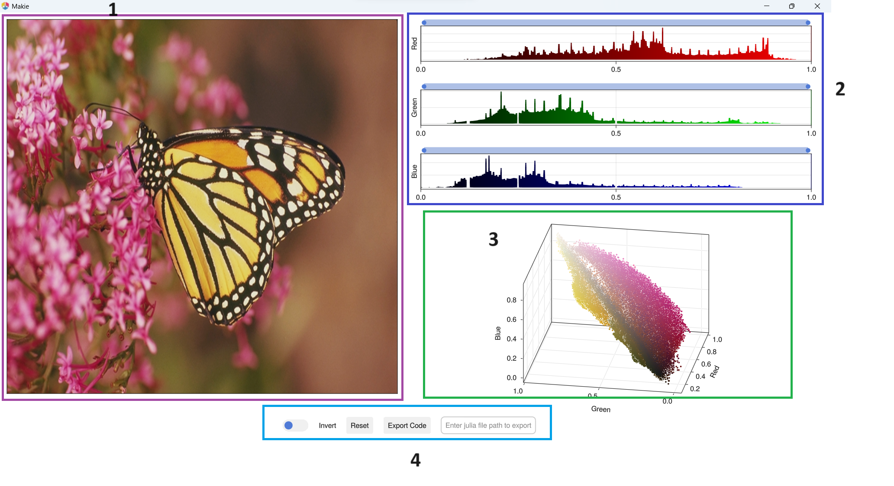
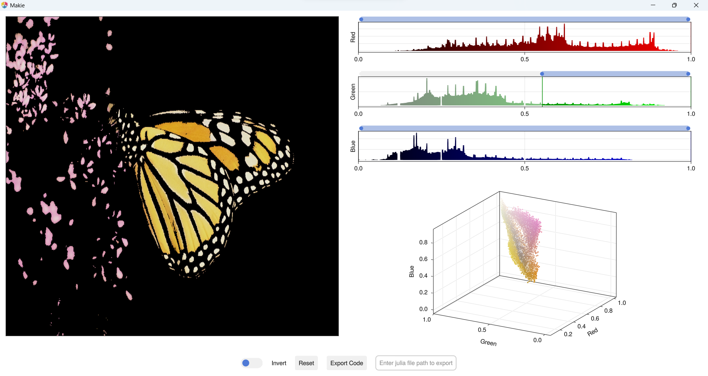
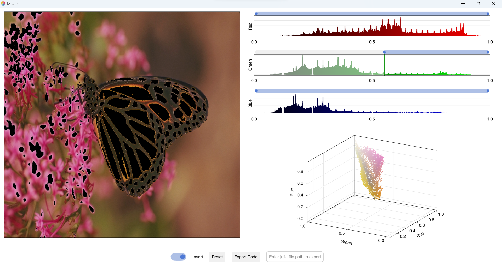

GUI
GUI has 4 parts
- Image preview
- Channel threshold
- 3D channel scatter
- Widgets

Image preview
It show live preview of image, image preview changes as per channels histogram change.
Channel threshold
It contains histograms with interval sliders for each channel. Changing slider values changes the following
- Change histogram transparent and add vertical lines on histogram axis to indicate selection range
- Change image preview , non selection pixel values changed to black.
- Change 3D channel scatter, remove non selection pixel values from scatter plot.
3D channel scatter
It show live 3D scatter plot for 3 channels of image. Scatter points changes per channels histogram change.
Widgets
It contains widgets to perform different operations.
Revert
It reverts histogram selections, see below
Reset
It reset the selection. It reset interval slider to orignal positions.
Export code
It export selection process as function named image_color_threshold and also If textbox is contains valid file path it exports as julia code. More can be found in here.
Julia file path textbox
It holds file path to export result as julia code.